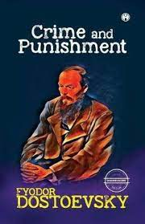
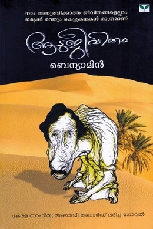

Othello is a Moorish military commander who was serving as a general of the Venetian army in defence of Cyprus against invasion by Ottoman Turks. He has recently married Desdemona, a beautiful and wealthy Venetian lady much younger than himself, against the wishes of her father. Iago is Othello's malevolent ensign, who maliciously stokes his master's jealousy until the usually stoic Moor kills his beloved wife in a fit of blind rage. Due to its enduring themes of passion, jealousy, and race, Othello is still topical and popular and is widely performed, with numerous adaptations.
Crime and punishment

Fyodor Dostoevsky
Crime and Punishment is a novel by the Russian author Fyodor Dostoevsky. It was first published in the literary journal The Russian Messenger in twelve monthly installments during 1866.It was later published in a single volume. It is the second of Dostoevsky's full-length novels following his return from ten years of exile in Siberia. Crime and Punishment is considered the first great novel of his mature period of writing.The novel is often cited as one of the supreme achievements in world literature.
Randamoozham
M.T.Vasudevan Nair
The novel is a retelling of the Indian epic Mahabharata from the perspective of Bhima, the second Pandava. The story deviates from the traditional Mahabharata story as it avoids the divine elements of the ancient epic and re-represent the characters and events realistically. One of the reasons critics cite for the novel's cult following is its revisionism, that was a first time in Malayalam literature. The book was translated to Tamil by Kurunjivelan as "Irandaam Idam" with cover illustration by Trotsky Marudu.
The Alchemist
Paulo Coelho
The Alchemist (Portuguese: O Alquimista) is a novel by Brazilian author Paulo Coelho which was first published in 1988. Originally written in Portuguese, it became a widely translated international bestseller. An allegorical novel, The Alchemist follows a young Andalusian shepherd in his journey to the pyramids of Egypt, after having a recurring dream of finding a treasure there.
Aadujeevitham

Benyamin
The novel depicts the life of Najeeb Muhammed, an Indian emigrant going missing in Saudi Arabia. Najeeb's dream was to work in the Persian Gulf states and earn enough money to send back home. But, he achieves his dream only to be propelled by a series of incidents into a slavelike existence herding goats in the middle of the Saudi desert. In the end, Najeeb contrives a hazardous scheme to escape his desert prison.
War and Peace
Leo Tolstoy
The novel chronicles the French invasion of Russia and the impact of the Napoleonic era on Tsarist society through the stories of five Russian aristocratic families. Portions of an earlier version, titled The Year 1805,[4] were serialized in The Russian Messenger from 1865 to 1867 before the novel was published in its entirety in 1869.
.jpeg)
.jpeg)